Materials
Materials in daily life : Metals
Metal 1: Aluminum
Aluminum, represented by the chemical symbol Al and atomic number 13, is a lightweight, silvery-white metal. It's the most abundant metallic element in Earth's crust and the most widely used nonferrous metal due to its abundance and various beneficial properties. 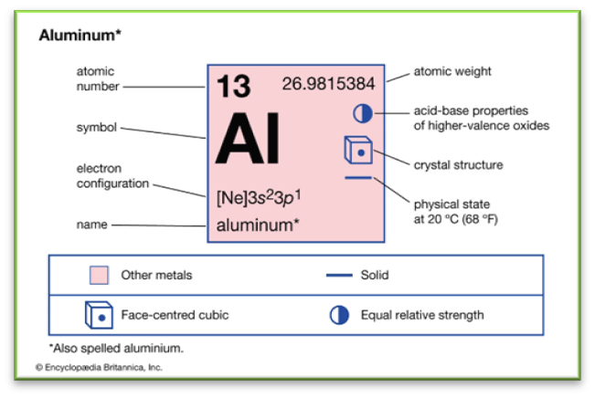
Characteristics of Aluminum
1. Lightweight: Its density is about one-third that of steel, making it exceptionally light.
2. Strength-to-Weight Ratio: Aluminum has a high strength-to-weight ratio, advantageous for various applications.
3. Corrosion Resistance: It naturally resists corrosion due to the formation of an oxide layer on its surface.
4. Ductility: Aluminum is highly ductile, meaning it can be stretched without breaking.
5. Thermal and Electrical Conductivity: It exhibits excellent thermal and electrical conductivity.
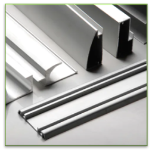
Physical and Chemical Properties
- Density: 2.71 g/cm.
- Melting Point: 660 °C (1,220 °F).
- Boiling Point: 2,467 °C (4,473 °F).
- Color: Lustrous, silvery-white.
Types of Aluminum
1. Pure Aluminum:Used in non-loadbearing applications like wires and foil. 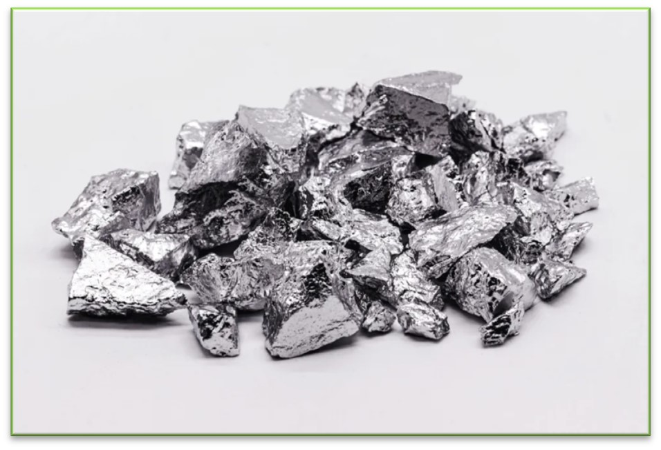
2. Aluminum Alloys:
Stronger than pure aluminum, used in automotive engines, chassis, and consumer products.
3. Cast Aluminum:
Used for engine components and prosthetic parts.
Used in machining and sheet metal fabrication. 5. Anodized Aluminum:
Has a harder and more durable surface, used in construction, appliances, and electronics. 6. Clad Aluminum (Alclad):
Improved corrosion resistance, often used in aerospace applications.
Applications
1. Transportation: Aircraft, vehicles, marine.
2. Packaging: Beverage cans, drug packaging.
3. Construction: Buildings, bridges.
4. Electrical Appliances: Motors, antennas, power lines.
5. Consumer Goods: Smartphones, cookware.
6. Machinery and Equipment: Industrial machinery, sensors, conveyors.
7. Medical Equipment: Wheelchairs, surgical instruments.
Production and Recycling
Aluminum is obtained primarily from bauxite ore. The process involves refining the ore to leave just the aluminum oxide, which is then split into aluminum and oxygen through electrolysis. This method is energy-intensive, which makes recycling aluminum (from sources like used drink cans) a more energy-efficient and environmentally friendly process.
Historical Context
Aluminum was isolated in 1825 by Hans Christian Øersted and later became more widely available and affordable due to advancements in production techniques like the Hall-Héroult process, discovered in 1886. This process is still used to produce most of the world's aluminum today.
Aluminum's versatility, combined with its favorable properties like lightweight, strength, and corrosion resistance, make it an integral material in a wide range of industries and applications.
Metal 2: Copper
Copper (Cu), a chemical element with atomic number 29, is known for its distinct reddish, highly ductile nature. It's an excellent conductor of electricity and heat, making it a valuable material in various industries.
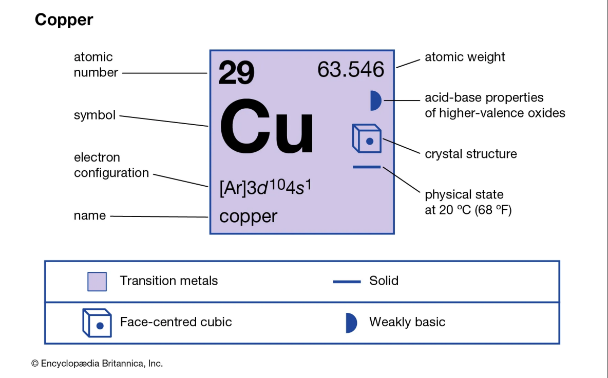
Characteristics of Copper
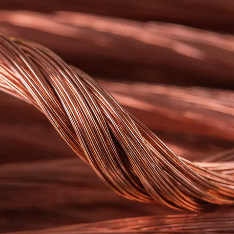1. Electrical and Thermal Conductivity: Copper is an outstanding conductor of electricity and heat, which is why it's widely used in electrical wiring and heat exchangers.
2. Malleability and Ductility: Copper is easy to bend and shape, facilitating its use in various forms such as wires and tubing.
3. Corrosion Resistance: It exhibits strong resistance to corrosion, particularly in water, making it suitable for plumbing and marine applications.
4. Aesthetic Appeal: Copper has a unique reddish-brown color, which can also tarnish to a green patina over time, adding to its decorative appeal.
Types and Applications of Copper
1. Copper Wire: Utilized for its excellent electrical conductivity in various electrical applications.
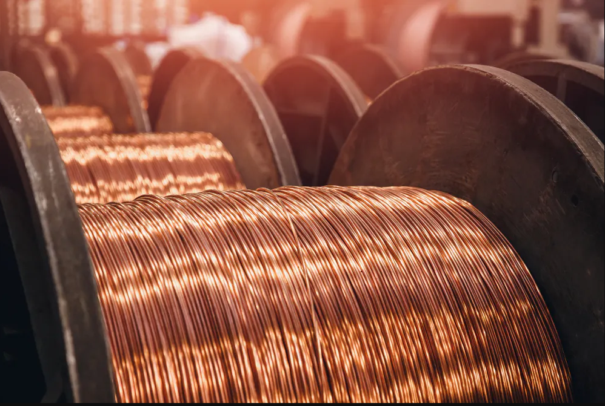2. Copper Tubing: Used in water systems due to its corrosion resistance and longevity.
3. Copper Alloys: Brass (alloyed with zinc) and bronze (alloyed with tin) are the most common copper alloys. Brass is used in plumbing, musical instruments, and decorative items, while bronze is known for its use in bearings, bushings, and ship components.
4. Pure Copper: Prepared to ensure minimal impurities, ideal for precision electrical components.
5. Copper Nanoparticles: Exhibiting unique behaviors and high catalytic activity, they are used in industrial chemical reactions and have antimicrobial applications.
6. Free-Machining Coppers: These contain minor amounts of other alloying elements to improve machinability, used in components like welding nozzles and soldering iron tips.
7. Sheets and Plates: Copper sheets and plates are used in various applications, based on their malleability and thickness.
8. Oxygen-Free Coppers: Known for their purity and minimal impurities, suitable for high-vacuum electronics.
9. Electrolytic Coppers: Refined by electrolysis, used in critical electrical components due to their high electrical conductivity.
Production and Refinement
Copper is primarily produced through smelting or leaching, usually followed by electrodeposition from sulfate solutions. This process is crucial for achieving the high purity required for various applications.
Historical Significance
Copper has been used since the Neolithic period, initially substituting stone. Its metallurgical applications date back to around 4000 BCE in Mesopotamia, and it was alloyed with tin to form bronze around 3500 BCE. The Roman supply of copper mainly came from Cyprus, leading to its Latin name 'Cuprum'.Copper's properties, such as its excellent conductivity, malleability, and corrosion resistance, combined with its historical significance, make it a fundamental material in modern technology and infrastructure.
Metal 3: Zinc
Zinc, with the chemical symbol Zn and atomic number 30, is a slightly brittle metal at room temperature, characterized by a shiny-greyish appearance when free of oxidation.
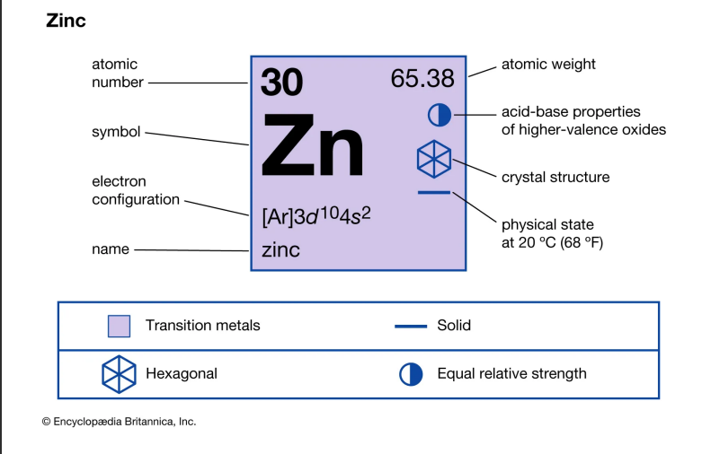
It's the first element in group 12 (IIB) of the periodic table and is similar to magnesium in some respects:
both exhibit only one normal oxidation state (+2), and their ions are of similar size. Zinc is the 24th most abundant element in Earth's crust and has five stable isotopes, the most common zinc ore being sphalerite (zinc blende), a zinc sulfide mineral.
-
Physical Properties
Biological Role and Importance
Zinc is an essential trace element for humans, animals, plants, and microorganisms, necessary for prenatal and postnatal development. It is the second most abundant trace metal in humans after iron and appears in all enzyme classes. Zinc is also crucial for coral growth as it acts as an important cofactor for many enzymes. Zinc deficiency can lead to various health issues like growth retardation, delayed sexual maturation, increased susceptibility to infection, and diarrhea in children. Excessive consumption of zinc may cause ataxia, lethargy, and copper deficiency.
Historical and Commercial Significance
Zinc metal production on a large scale started in the 12th century in India, though it was known to ancient Romans and Greeks. The oldest evidence of pure zinc comes from Zawar, in Rajasthan, as early as the 9th century AD. Brass, an alloy of copper and zinc, has been used since the third millennium BC. Zinc is produced primarily by roasting sulfide ores, then leaching the oxidized product in sulfuric acid or smelting it in a blast furnace, and finally by electrolysis or condensation from blast furnace gas followed by distillation.
Materials in daily life : Nonmetals
Nonmetal 1: Carbon
Carbon, with the chemical symbol C and atomic number 6, is a nonmetallic element that plays a pivotal role in the chemistry of life. It is tetravalent, making four electrons available to form covalent chemical bonds.
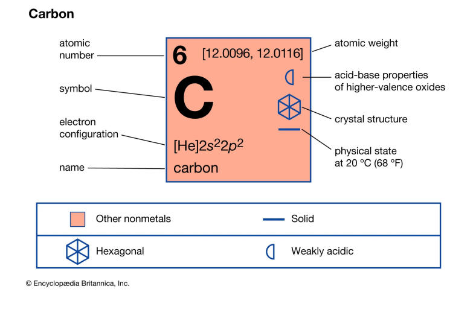This versatility allows carbon to form a wide range of compounds, more than any other element. Its common allotropes include diamond, graphite, amorphous carbon (like charcoal and carbon black), and nanoforms such as graphene and fullerenes.
Physical Properties

Chemical Properties
Occurrence and Distribution
Carbon is the 15th most abundant element in the Earth's crust and the 4th most abundant element in the universe by mass. It is a fundamental component of all known life, making up about 18.5% of the human body by mass.
Uses
Health and Environmental Impacts
Global Warming: Carbon oxides, mainly CO₂, are major contributors to global warming.Toxicity: Generally low in toxicity, but inhalation of carbon black can damage the lungs.
Nonmetal 2: Oxygen
Oxygen, symbolized as O and having the atomic number 8, is a nonmetallic element essential to life and one of the most significant elements on Earth. It's known for its high reactivity and plays a crucial role in various chemical processes and manufacturing.
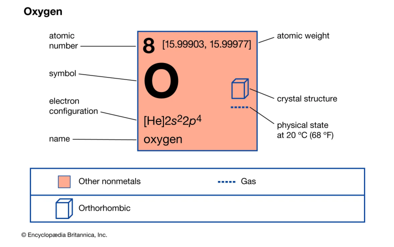
Discovery and History
Oxygen was first theorized in the 2nd century when Philo observed the role of air in combustion. Robert Hooke in 1665 and John Mayow in 1668 proposed theories about a unique substance in air related to combustion and respiration. Carl Wilhelm Scheele and Joseph Priestley independently discovered oxygen in 1774, and Antoine Lavoisier named it "oxygen" from Greek words meaning "acid forming" due to its role in forming acids.
Physical Properties:
Chemical Properties
Occurrence and Distribution
Uses
Health Hazards
Nonmetal 3: Silicon
Silicon, symbolized as Si with atomic number 14, is a nonmetallic element that is second only to oxygen in abundance in the Earth’s crust. It is tetravalent, making four electrons available to form covalent chemical bonds. This versatility allows silicon to form a wide range of compounds. Its common forms include crystalline silicon and amorphous silicon.
Discovery and History
The discovery of Silicon is an intriguing tale. Initially, in 1787, Antoine-Laurent de Lavoisier, a French chemist, identified the presence of silicon in rocks. However, it was mistakenly identified as a compound by Sir Humphry Davy in 1800. In 1811, French chemists Joseph Louis Gay-Lussac and Louis Jacques Thénard likely prepared impure amorphous Silicon by heating potassium with silicon tetrafluoride. The credit for discovering silicon as a metal element is given to the Swedish chemist Jöns Jacob Berzelius in 1823. He extracted amorphous silicon in a similar manner to Gay-Lussac and then purified the elemental silicon by repeated cleaning. In 1824, in Stockholm, Berzelius obtained relatively pure silicon powder by heating potassium fluorosilicate and potassium. Hence, the honor of discovering silicon is attributed to Berzelius. 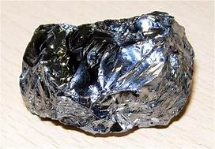
Physical Properties
Chemical Properties
Occurrence and Distribution
Silicon is the eighth most common element in the universe by mass. It is widely distributed in space in cosmic dusts, planetoids, and planets as various forms of silicon dioxide (silica) or silicates. On a weight basis, the abundance of silicon in the crust of Earth is exceeded only by oxygen.
Uses
Composite Materials in Daily Life
Composite Material 1: Fiberglass
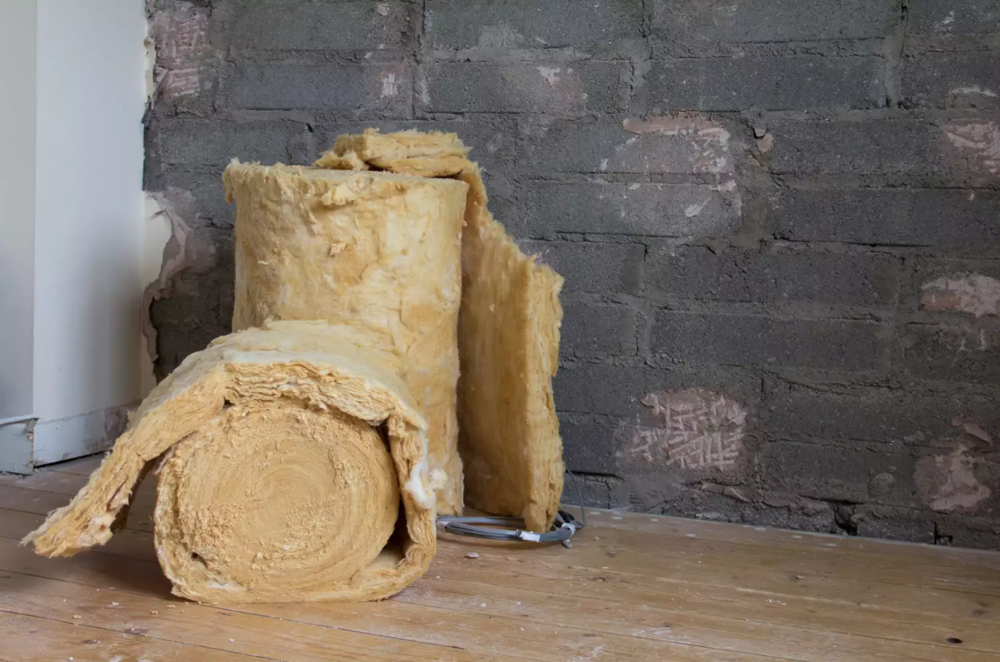
Definition and Composition
Fiberglass, also known as glass-reinforced plastic (GRP) or glass-fiber-reinforced plastic (GFRP), is a common type of fiber-reinforced plastic using glass fiber. The fibers may be randomly arranged, flattened into a sheet (called a chopped strand mat), or woven into glass cloth. The plastic matrix may be a thermoset polymer matrix—most often based on thermosetting polymers such as epoxy, polyester resin, or vinyl ester resin—or a thermoplastic.
Manufacturing Process
To manufacture fiberglass, glass is heated until molten, then forced through superfine holes, creating glass filaments that are extremely thin. These flexible filament threads can be used in several applications: They can be woven into larger swatches of material or left in a somewhat less structured form used for the more familiar puffy texture used for insulation or soundproofing.
Physical Properties
Chemical Properties:
Fiberglass is chemically inert under many circumstances, making it resistant to many chemical reactions. It is also non-magnetic, non-conductive, and transparent to electromagnetic radiation.
Occurrence and Distribution
Microplastics, including fiberglass, are ubiquitously present in various environments, making them a noteworthy issue. Natural and synthetic fibers, including fiberglass, were mainly detected in studies investigating microplastic pollution in the air. Textile clothes, anthropogenic activities, and fragmentation of large plastics were indicated as the main sources, while the wind was pointed out as the predominant transport mechanism of atmospheric microplastics.
Uses
Fiberglass is used in a wide range of applications due to its versatility and strength. Some of the common applications include aircraft, boats, automobiles, bath tubs and enclosures, swimming pools, hot tubs, septic tanks, water tanks, roofing, pipes, cladding, orthopedic casts, surfboards, and external door skins. It’s also used in thermal and acoustical insulation, creating waterproof surfaces, and as a reinforcing agent in plastics and other composite materials.
Composite Material 2: Carbon Fiber
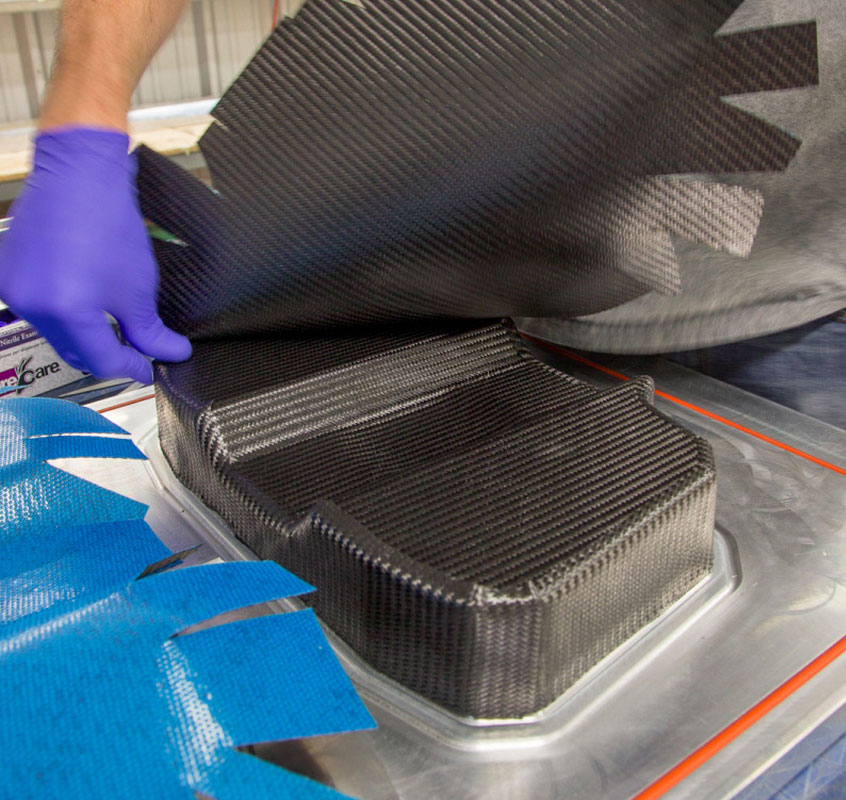
Composition and Manufacturing
Material Composition: Carbon fiber is composed of thin, strong crystalline filaments of carbon, created by carbonizing raw materials, like polyacrylonitrile (PAN), rayon, or petroleum pitch, through controlled pyrolysis.
Manufacturing Process involves several stages:
Properties
Applications
Composite Material 3: Concrete
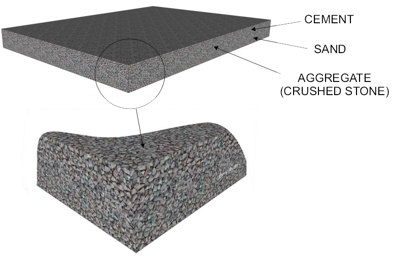
Composition and Types
Basic Ingredients: Primarily composed of cement (commonly Portland cement), aggregates (gravel, sand), and water.
Types: Various types include:
Properties
Manufacturing and Curing
Applications
New Materials
Material 1: Electrochromic Cladding
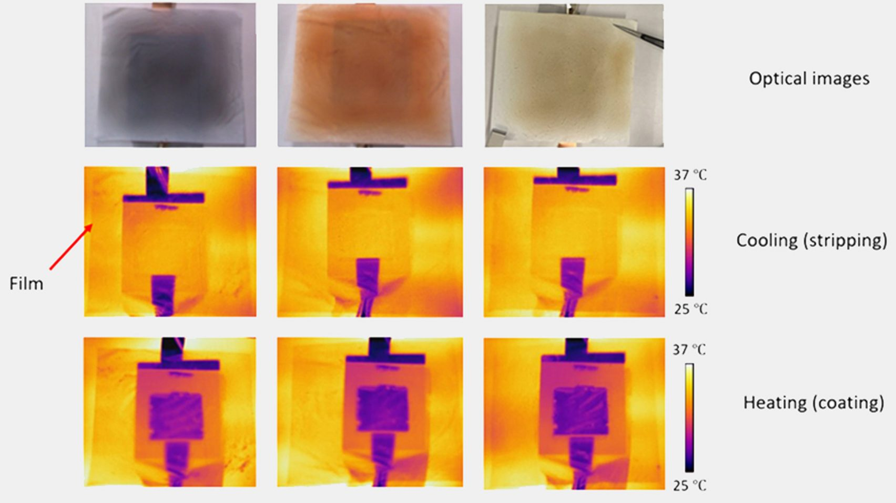
Description:
Electrochromic cladding is a composite material that changes color based on temperature variations. It utilizes a small electrical impulse to alter its color, appearing yellow when emitting heat and turning purple when retaining heat.
Applications:
Its primary application is in building facades, where it can help regulate indoor temperatures by adjusting the amount of heat absorbed or emitted. This adaptive feature makes it a valuable tool for energy efficiency in buildings.
Technology:
The technology behind this material is based on electrochromic phenomena, where the material's color changes in response to an electrical charge, altering its heat emission and absorption properties.
Benefits:
It offers a low-energy solution for thermal regulation in buildings, potentially reducing reliance on heating and cooling systems. It also adds an aesthetic and functional dimension to architectural design.Material 2: Bio-Blocks by Prometheus Materials and SOM
Description:
Bio-Blocks are a sustainable alternative to traditional concrete masonry blocks, using micro-algae as a binding agent instead of Portland cement.
Applications:
These blocks can be used in a variety of construction projects, particularly in building structures where reducing the carbon footprint is a priority.
Manufacturing Process:
Micro-algae are used to bind the materials together, creating a strong and durable block. The process significantly reduces CO2 emissions compared to conventional concrete production.
Environmental Impact:
By replacing Portland cement, which is a significant source of global CO2 emissions, Bio-Blocks offer a more sustainable and eco-friendly option for construction materials.
Post Processing Methods
Metals: Stainless Steel
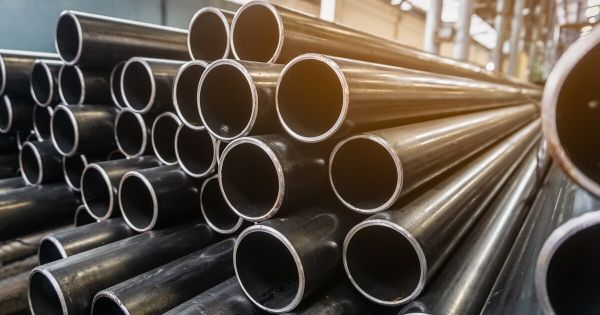 1. Electropolishing
Plastic: ABS Plastic
1. Acetone Smoothing
Wood
1. Sanding 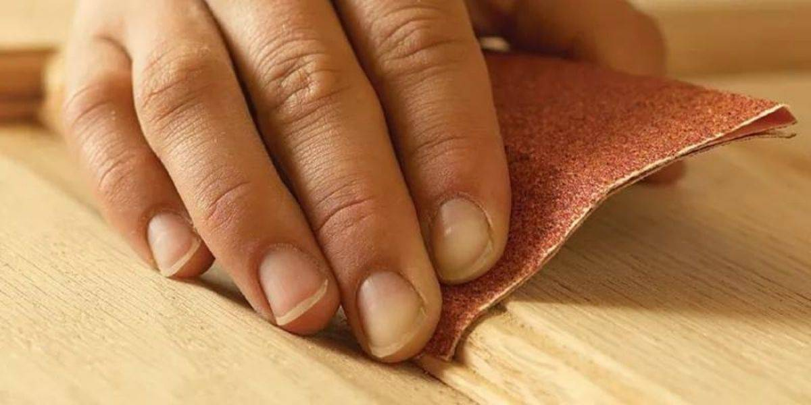
"These techniques enhance the functionality, durability, and aesthetic qualities of the materials. For stainless steel and ABS plastic, the focus is on both improving physical properties (like corrosion resistance and structural integrity) and enhancing appearance. For wood, the emphasis is on preserving its natural beauty while providing protection from environmental factors."
Materials for our final project
1. Plastic
What Exactly Is Plastic?
Plastic is a widely used synthetic material derived from petrochemicals or other sources like cellulose. Chemically treated to form polymers, plastics can be molded into diverse shapes through techniques like injection molding. Known as resins too, plastics are popular for their versatility, durability, and cost-effectiveness. Various types such as polyethylene, polypropylene, PVC, PET, polystyrene, and nylon exist, each with distinct properties. Plastics fall into two main groups: thermoplastics, which can be remolded, and thermosets, which cannot be reprocessed when heated. The widespread use of plastic in modern society is attributed to its ease of manufacturing and low cost.
What Is Plastic Made Of?
Plastics are crafted from various polymers, both natural and synthetic, using constituents like coal, natural gas, cellulose, starch, crude oil, and salt. The primary methods for plastic production involve polymerization and polycondensation processes, necessitating specific catalysts. In polymerization, monomers like propylene and ethylene combine to create extended polymer chains. The resulting polymers exhibit unique sizes, structures, and properties determined by the specific monomers employed in the process.
What Are the Characteristics of Plastic?
Plastics have a few unique properties that make them practical for a wide range of applications. Plastic materials are regarded as:
What Does a Plastic Look Like?
Plastic can come in many different colors and textures, depending on the type of plastic and how it has been treated or processed. Plastic is a synthetic polymer made from various organic materials that can be molded into almost any shape. Some types of plastic are clear and transparent, like that used in disposable water bottles, while others are opaque and available in a range of colors. Plastic can also have different surface textures, ranging from smooth and shiny to rough and matte. Some types of plastic have soft and flexible textures, while others are rigid. Figure 1 below is an example of plastic:
What Are Different Types of Plastic?
1. Polyethylene Terephthalate (PET)
2. Acrylonitrile Butadiene Styrene (ABS)
3. Polyvinyl Chloride (PVC)
4. Polypropylene (PP)
5. Polyethylene (PE)
6. Polystyrene (PS)
7. Acrylic or Polymethyl Methacrylate (PMMA)
8. Polycarbonate (PC)
What Are the Physical Properties of Plastic?
The physical properties of plastic include:
What Are the Chemical Properties of Plastic?
Here are some common chemical properties of plastic:
For our project we decided to go with the “Polyethylene (PE)” for it’s strenght and flexibility as well the low costing manufacturing process. Polyethylene (PE) stands as the most prevalent polymer globally, with an annual production of 85 million metric tons, owing to its extensive utility. Classified by melting points, it encompasses low, medium, and high-density variants, each finding distinct industrial applications. These include High-Density Polyethylene (HDPE), Ultra Low-Density Polyethylene (ULDPE), Linear Low-Density Polyethylene (LLDPE), Medium-Density Polyethylene (MDPE), High Molecular Weight Polyethylene (HMWPE), and Ultra High Molecular Weight Polyethylene (UHMWPE).
Historically, polymerization occurred under high pressure and temperature, but advancements led to energy-efficient catalytic systems like Ziegler and metallocene. These catalyst families enable copolymerization, yielding a diverse range of PE resins. The production methods involve slurry, gas-phase fluidized bed reactors, or their sequential combination, such as the Spherilene and Borstar processes. Slurry-phase polymerization utilizes double-tube loop reactors or autoclaves with catalysts and diluents. An example is the Borstar process, employing a Double-Tube Loop Reactor followed by a gas-phase reactor. These innovations have optimized energy efficiency in PE production over time.
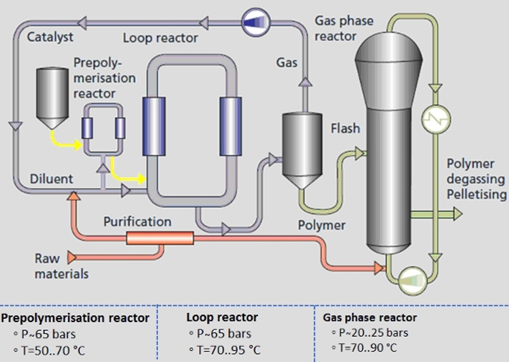2. Aluminum
What Is Aluminum?
Aluminum is a silvery-white, lightweight, corrosion-resistant, non-magnetic, and ductile material. It is the most abundant metal on Earth. It makes up more than 8% of the matter in Earth’s crust, behind only oxygen and silicon. Aluminum is the most produced and refined non-ferrous metal because of its properties and abundance. It is commonly used in a number of industries, including transportation, construction, packaging, machine manufacturing, and consumer goods.
What Is the Symbol for Aluminum?
The symbol for aluminum on the periodic table is “Al.”
What Is the Atomic Number of Aluminum?
The atomic number of aluminum is 13. It is the first post-transition metal on the periodic table. Aluminum is in the 3rd period (row) and in the 13th group (column).
What Is the Atomic Weight of Aluminum?
The atomic weight of aluminum is 26.98 amu (atomic mass units). 1 amu is equivalent to 1/12th the size of a neutral carbon atom.
What Is the Other Term for Aluminum?
Another term for aluminum is “aluminium.” While “aluminum” is commonly used in the United States and Canada, “aluminium” is often used in the rest of the English-speaking world. The American Chemical Society (ACS) adopted “aluminum” as the official term for the element in 1925, but the International Union of Pure and Applied Chemistry (IUPAC) adopted “aluminium” as the official term in 1990.
What Is Aluminum Made Of?
Aluminum is found in nature as alum (sulfate) forms and oxides. Materials from which pure aluminum can be refined are listed below:
What Are the Characteristics of Aluminum?
Some of the aluminum’s main characteristics are described below:
What Is the Density of Aluminum?
The density of aluminum is 2.71 g/cm3.
What Are the Different Types of Aluminum?
- Pure Aluminum
- Aluminum Alloys
- Cast Aluminum
- Wrought Aluminum
- Anodized Aluminum
- Clad Aluminum
What Are the Physical Properties of Aluminum?
The physical properties of aluminum are described in Table 1 below:
What Are the Chemical Properties of Aluminum?
The chemical properties of aluminum are described in Table 2 below:
3. Rubber
What is Rubber?
There are two types of rubber:
Natural Rubber (NR)
How it is made:
Harvested from the milky liquid (latex) from the Hevea Brasiliensis tree.
Where it is mainly used:
Sectors:
Features:

Silicone Rubber (Q)
How it is made:A complex process involving quartz sand, high temperatures, distillation, and the use of various chemicals creates what we know as silicone rubber.
Where it is mainly used:
Sectors:
Features:

Neoprene Rubber (CR)
How it is made:Created by polymerization of chloroprene using heat alongside various chemicals.
Where it is mainly used:
Sectors:
Features:

Butyl Rubber (IIR) or Isobutylene-isoprene or “butyl”
How it is made: Formed by copolymerizing isobutylene with small amounts of isoprene at a low temperature.
Where it is mainly used:
Sectors:
Features:

Ethylene Propylene Diene Monomer (EPDM)
How it is made: Created through bulk polymerization using one of three processes: slurry, solution or gas-phase.
Where it is mainly used:
Sectors:
AutomotiveFeatures: